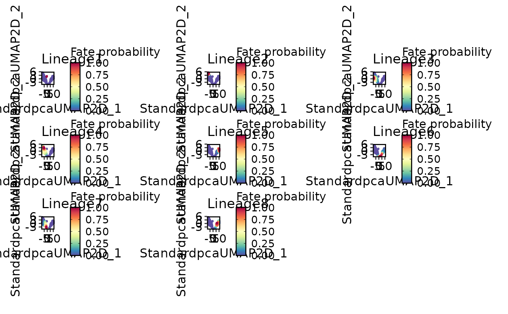
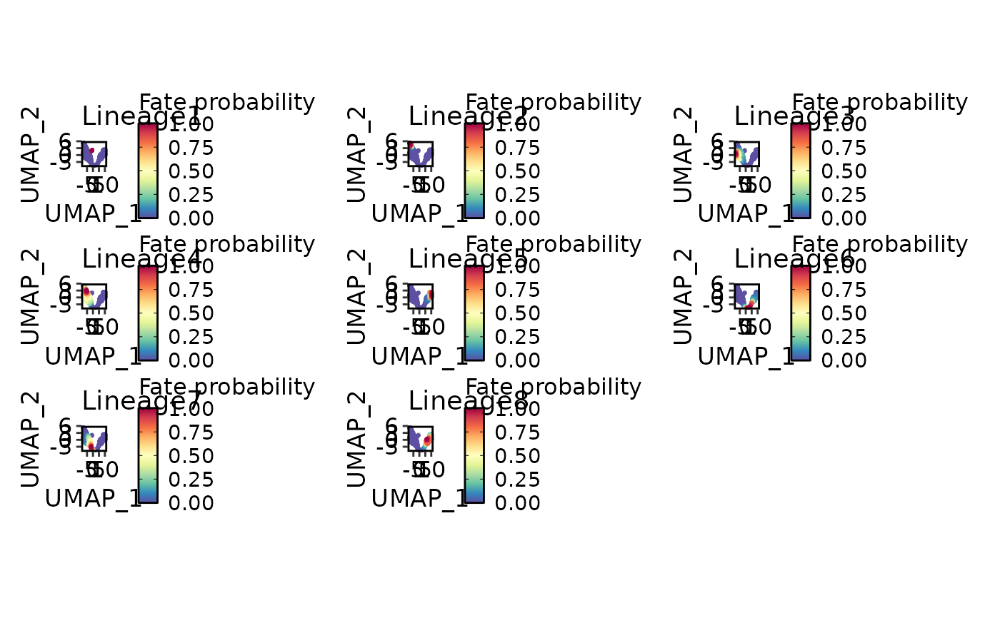
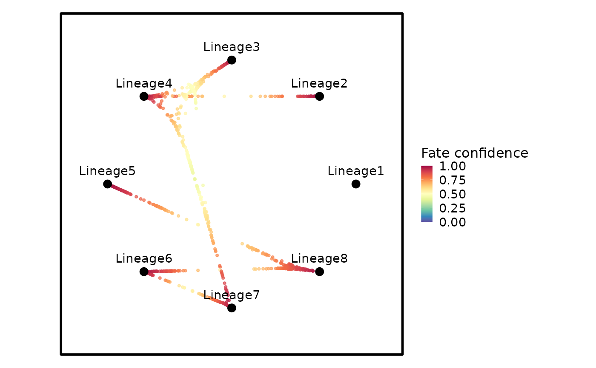

Plot CellRank results
Usage
CellRankPlot(
object,
plot_type = c("fate", "states", "circular", "drivers", "projection", "random_walks",
"flow"),
lineage = NULL,
reduction = NULL,
group.by = NULL,
top_n = 20L,
n_sims = 100L,
max_iter = 500L,
seed = 0L,
start_cells = NULL,
cluster = NULL,
clusters = NULL,
palette = "Chinese",
palcolor = NULL,
feature_palette = "Spectral",
feature_palcolor = NULL,
theme_use = "theme_scop",
theme_args = list(),
srt = NULL,
...
)Arguments
- object
A Seurat object returned by [RunCellRank].
- plot_type
One of `"fate"`, `"states"`, `"circular"`, `"drivers"`, `"projection"`, `"random_walks"`, or `"flow"`.
- lineage
Lineage used for driver plots.
- reduction
Reduction used for cell-space plots.
- group.by
Group column used for state/random-walk plots.
- top_n
Number of driver genes to display.
- n_sims
Number of random walks.
- max_iter
Maximum length of each random walk.
- seed
Random seed. Random-walk plotting restores the caller's RNG state, including when plotting fails.
- start_cells
Optional cell names used as random-walk starts. For a moscot result, omitted starts default to cells in the earliest time point.
- cluster
Starting group for `plot_type = "flow"`.
- clusters
Optional groups to display in a real-time flow plot.
- palette, palcolor
Discrete SCOP palette for states and cell groups.
- feature_palette, feature_palcolor
Continuous SCOP palette for fate, confidence, and pseudotime.
- theme_use, theme_args
SCOP plot theme and arguments passed to it.
- srt
Deprecated alias for `object`; supply exactly one of the two. It will be removed in scop 1.0.0.
- ...
Arguments passed to other functions.
See also
[DynamicHeatmap] and [DynamicPlot] for feature dynamics; [EnrichmentPlot] for enrichment results.
Examples
data(pancreas_sub)
pancreas_sub <- RunStandardWorkflow(pancreas_sub)
#> ℹ [2026-11-11 04:42:59] Start standard processing workflow...
#> ℹ [2026-11-11 04:42:59] Checking a list of <Seurat>...
#> ! [2026-11-11 04:42:59] Data 1/1 of the `srt_list` is "unknown"
#> Warning: Data 1/1 of the `srt_list` is "unknown"
#> ℹ [2026-11-11 04:42:59] Perform `NormalizeData()` with `normalization.method = 'LogNormalize'` on 1/1 of `srt_list`...
#> ℹ [2026-11-11 04:42:59] Perform `FindVariableFeatures()` on 1/1 of `srt_list`...
#> ℹ [2026-11-11 04:43:00] Use the separate HVF from `srt_list`
#> ℹ [2026-11-11 04:43:00] Number of available HVF: 2000
#> ℹ [2026-11-11 04:43:00] Finished check
#> ℹ [2026-11-11 04:43:00] Perform `ScaleData()`
#> ℹ [2026-11-11 04:43:00] Perform pca linear dimension reduction
#> ℹ [2026-11-11 04:43:00] Use stored estimated dimensions 1:23 for Standardpca
#> ℹ [2026-11-11 04:43:00] Perform `Seurat::FindClusters()` with `cluster_algorithm = 'louvain'` and `cluster_resolution = 0.6`
#> ℹ [2026-11-11 04:43:00] Reorder clusters...
#> ℹ [2026-11-11 04:43:01] Skip `log1p()` because `layer = data` is not "counts"
#> ℹ [2026-11-11 04:43:01] Perform umap nonlinear dimension reduction
#> ✔ [2026-11-11 04:43:06] Standard processing workflow completed
pancreas_sub <- RunCellRank(
pancreas_sub,
group.by = "SubCellType",
kernel_type = "pseudotime",
time_key = "palantir_pseudotime",
schur_method = "brandts",
backend = "cpp"
)
#> ! [2026-11-11 04:43:06] RunCellRank(backend = "cpp") uses an approximate C++ implementation; results may not be completely identical to the reference python workflow.
#> Warning: RunCellRank(backend = "cpp") uses an approximate C++ implementation; results may not be completely identical to the reference python workflow.
#> ℹ [2026-11-11 04:43:06] Running `RunSCVELO()` cpp backend before `RunCellRank()`
#> ℹ [2026-11-11 04:43:06] Running scanpy-compatible preprocessing (15998 features -> filter + normalize)...
#> ℹ [2026-11-11 04:43:09] Running scVelo "stochastic" mode with `backend = 'cpp'` (9699 features)
#> ✔ [2026-11-11 04:43:13] scVelo "stochastic" mode completed
#> ✔ [2026-11-11 04:43:13] scVelo cpp backend completed
#> ! [2026-11-11 04:43:13] Pseudotime not found; computing velocity pseudotime
#> Warning: Pseudotime not found; computing velocity pseudotime
#> ✔ [2026-11-11 04:43:16] CellRank cpp backend ("gpcca" + "pseudotime_connectivity_combined" kernel) completed

CellRankPlot(
pancreas_sub,
plot_type = "fate",
reduction = "UMAP",
xlab = "UMAP_1",
ylab = "UMAP_2"
)

CellRankPlot(
pancreas_sub,
plot_type = "circular"
)
#> Scale for colour is already present.
#> Adding another scale for colour, which will replace the existing scale.
